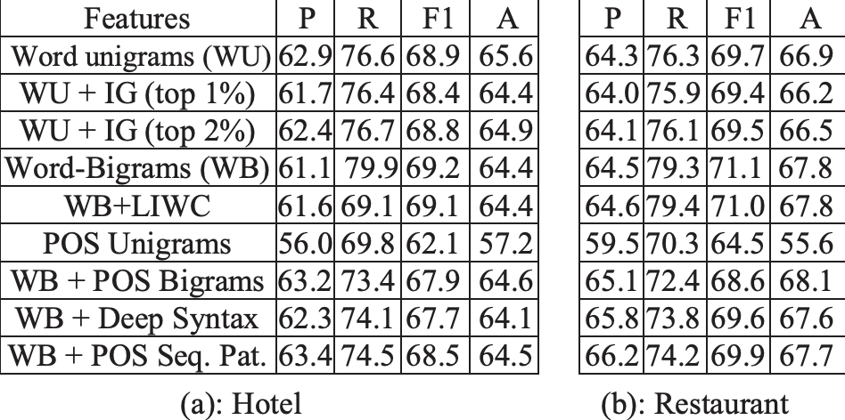
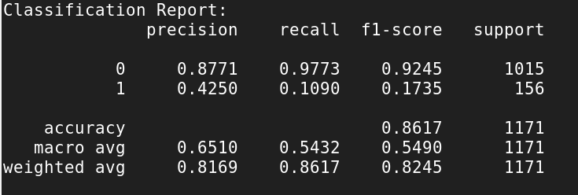

Information Retrieval Final Project
Yelp Spam Filter
by Pascal Bakker, Zhiyuan Chen, Merzia Naeem Adamjee
1. Introduction
Online product reviews have become an increasingly valuable source for consumers and buyers to make decisions on what to buy or what to eat. And in the age of social media, it has become quite common to fake reviews to either unfairly promote a product or defame it. Such activities are called ‘opinion spam’ and we intend to propose an algorithm that discerns “real” reviews from “spam” and recommends based on those ‘real’ reviews only. Removing opinion spam can help improve the user experience, and maintain trust between a company and its user. The goal of this project is to understand Yelp’s built-in spam detection and recommendation system and utilize their dataset to propose a modified spam detection system that will make use of modern machine learning techniques. Once completed our model should retrieve relevant information/items and recommend based on ‘real’ reviews to help Yelp’s users make better decisions based on authentic data.
2. Dataset
Each review contained the following features:
- Date
- ReviewID
- Label
- Star Rating

3. Methodology
Spam Classification
4. Results
Naive Bayes
Bert Model
5. Conclusion
Code Documentation
Installation
Install the requirements.yaml to your conda env to run all the code in this project.
conda env update -b my_env --file requirements.yaml
Classification
To train the Bert model, run python train.py. To test the bert model, update the variable 'text' in test.py and execute python train.py . The model weights are located in the 'results' folder.
To train and run the Naive Bayes model, please go into the 'Research.ipynb' file and execute all blocks of code.